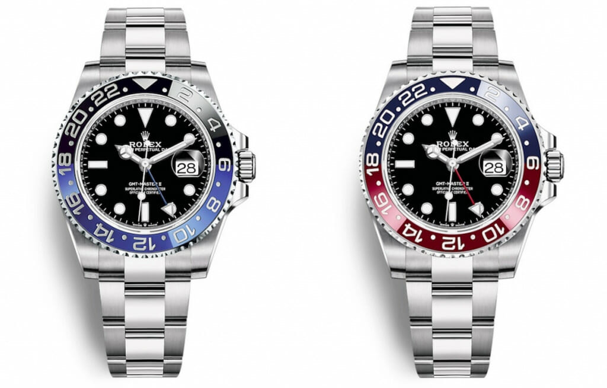
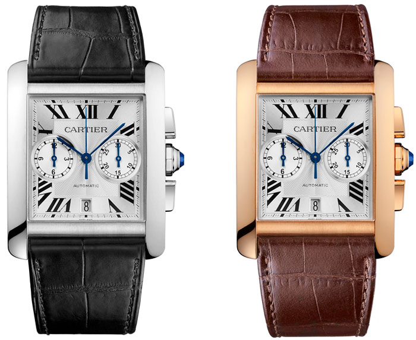
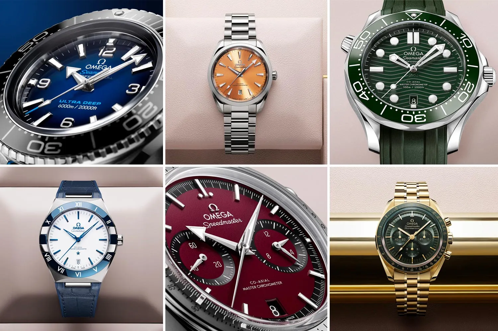
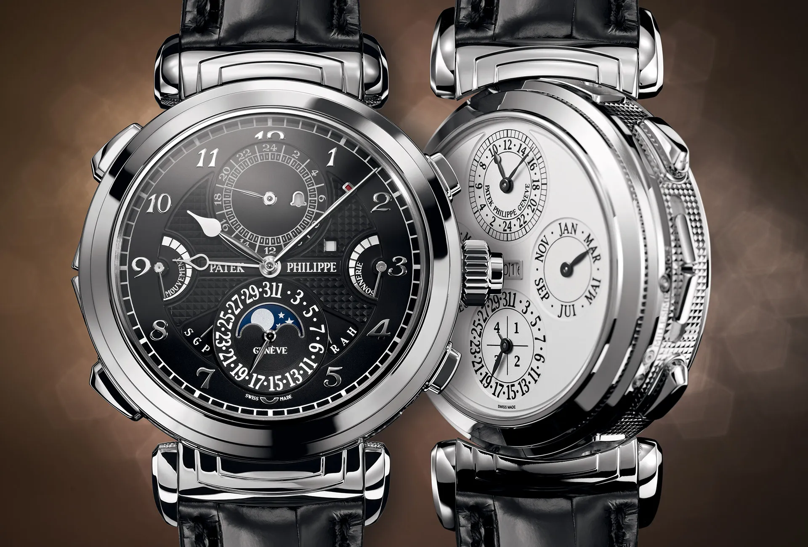
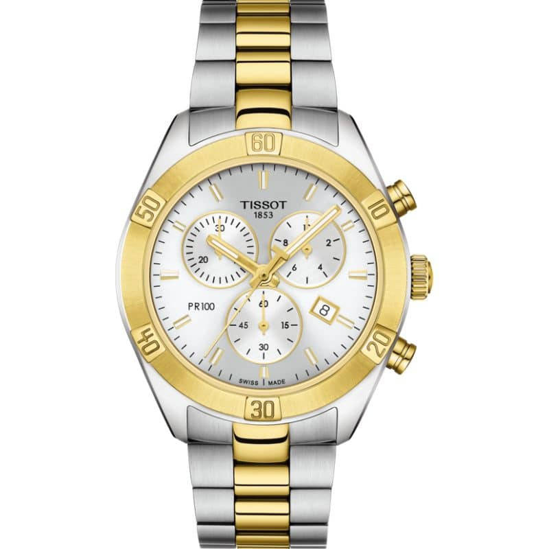
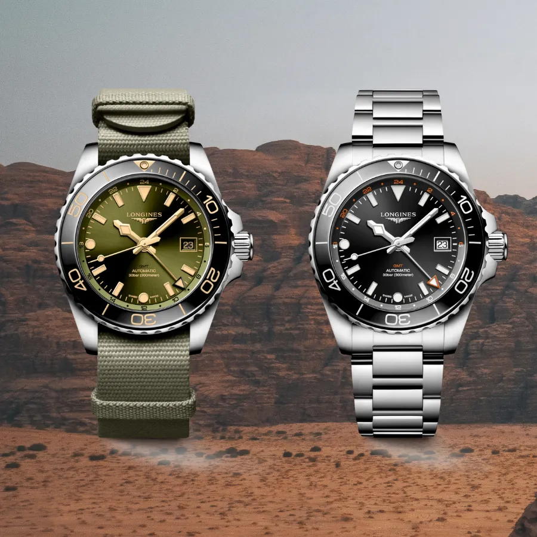

Rolex
Découvrez l'excellence horlogère avec notre collection de montres Rolex. Chaque Rolex incarne la quintessence de la précision suisse et de l'élégance intemporelle. Fabriquées avec un souci méticuleux du détail, nos montres Rolex sont bien plus que des instruments de mesure du temps ; elles sont des œuvres d'art horlogères. Plongez dans l'univers du luxe et du prestige avec une montre Rolex, et ajoutez une touche de raffinement à chaque instant de votre vie.
Acheter

Cartier
Découvrez l'élégance inégalée avec notre collection de montres Cartier. Chaque montre Cartier est une fusion parfaite de l'art horloger et du design intemporel. Créées avec une attention méticuleuse aux détails, nos montres Cartier sont des symboles de luxe et de sophistication. Portez une montre Cartier pour afficher un style unique et une esthétique raffinée qui transcendent les tendances éphémères. Explorez notre collection et découvrez la magie de Cartier.
Acheter

Omega
Découvrez l'héritage de l'horlogerie suisse avec notre collection de montres Omega. Chaque montre Omega est le fruit d'une tradition horlogère riche et d'une innovation continue. Fabriquée avec une précision exceptionnelle, une ingénierie de pointe et un design élégant, une montre Omega est bien plus qu'un accessoire de mode, c'est une déclaration de style intemporel. Plongez dans l'univers de l'innovation et de la sophistication suisses avec une montre Omega, et élevez chaque instant à un niveau supérieur.
Acheter

Patek Philippe
Découvrez l'excellence horlogère légendaire avec notre collection de montres Patek Philippe. Chaque montre Patek Philippe est une pièce d'art horloger exceptionnelle, créée avec une passion inégalée pour la perfection. L'histoire riche de la marque remonte à plus de cent cinquante ans, et chaque montre est le résultat d'un artisanat méticuleux, d'une précision suisse et d'une esthétique intemporelle. Porter une montre Patek Philippe, c'est porter une œuvre d'art au poignet, une manifestation de raffinement et d'héritage horloger. Explorez notre collection et découvrez l'éclat de Patek Philippe..
Acheter

Tissot
Découvrez le mariage de la tradition suisse et de l'innovation moderne avec notre collection de montres Tissot. Chaque montre Tissot est un chef-d'œuvre d'horlogerie, incarnant un héritage de plus d'un siècle de maîtrise horlogère. Fabriquées avec une précision suisse, nos montres Tissot sont à la fois élégantes et fonctionnelles. Portez une montre Tissot pour afficher un style sophistiqué, une qualité inégalée et une fiabilité exceptionnelle. Explorez notre collection et vivez l'essence de l'horlogerie suisse à son meilleur.
Acheter

Longines
Découvrez l'élégance intemporelle avec notre collection de montres Longines. Chaque montre Longines est le reflet d'une tradition horlogère suisse de renom, alliant une précision exceptionnelle à un design classique. Fabriquées avec un souci méticuleux du détail, nos montres Longines incarnent le raffinement et l'art de l'horlogerie. Porter une montre Longines, c'est porter une pièce d'héritage qui transcende les époques. Explorez notre collection et découvrez la quintessence de l'horlogerie suisse.
Acheter